El Boe a vista de pájaro
Preparación
Aquí cargo las liberías que me ayudan a visualizar los datos. También cargamos los datos del BOE del 2009/01/01 (fecha a partir de la qual lo que figure en la página web tiene validez legal) hasta el 2019/11/17:
Por último le añadimos el día de la semana.
Sección
Primeros datos: la sección a la que pertenece cada publicación. Tal y como explica en un manual del BOE, solo pueden ser 6 ( o 9 si contamos el desglose):
- Disposiciones Generales
- Autoridades y Personal.
- 2A. Nombramientos situaciones e incidencias
- 2B. Oposiciones y concursos
- Otras secciones
- Administración de Justicia
- Anuncios.
- 5A. Licitaciones públicas y adjudicaciones
- 5B. Otros anuncios oficiales
- 5C. Anuncios particulares
- T. Tribunal constitucional
Sin mucho detalle (por el momento) solo algunas graficas sobre que se publica, empezando por cuando hay publicaciones del tribunal consitucional:
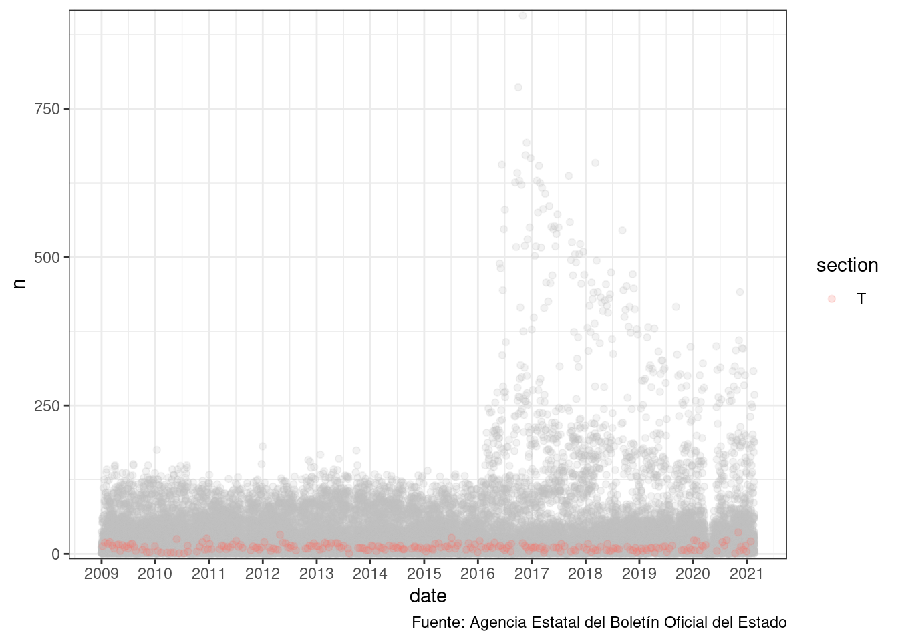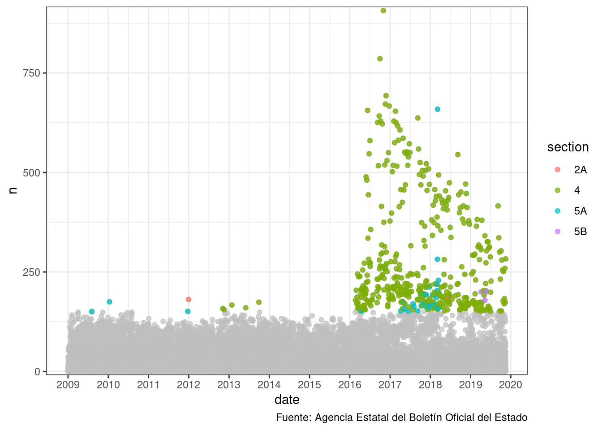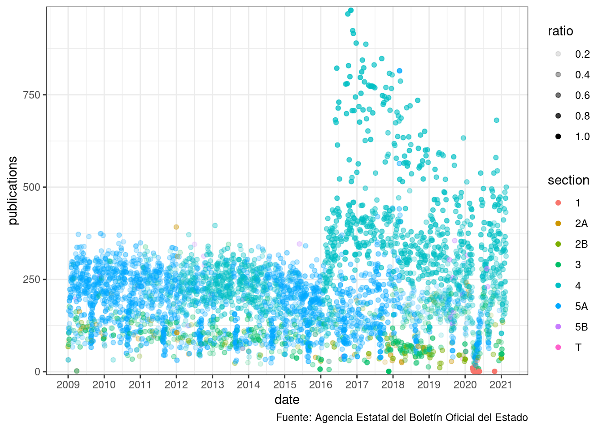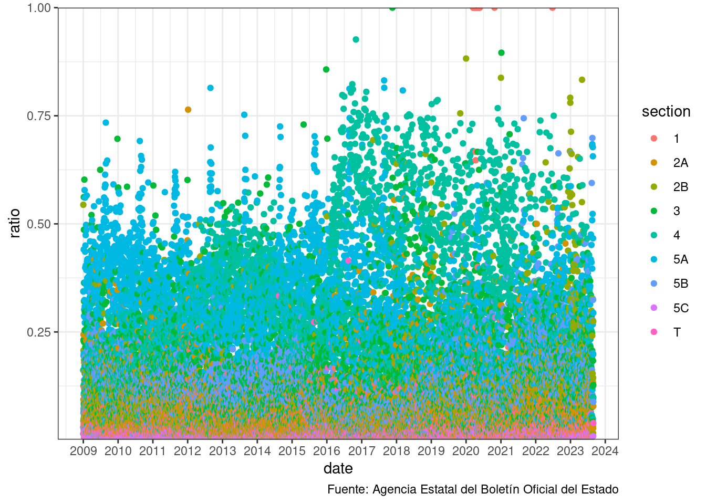
Departamento
El departamento es el segundo desglose de la publicación. Cada departamento tiene un código que no parece que haya cambiado con el tiempo.
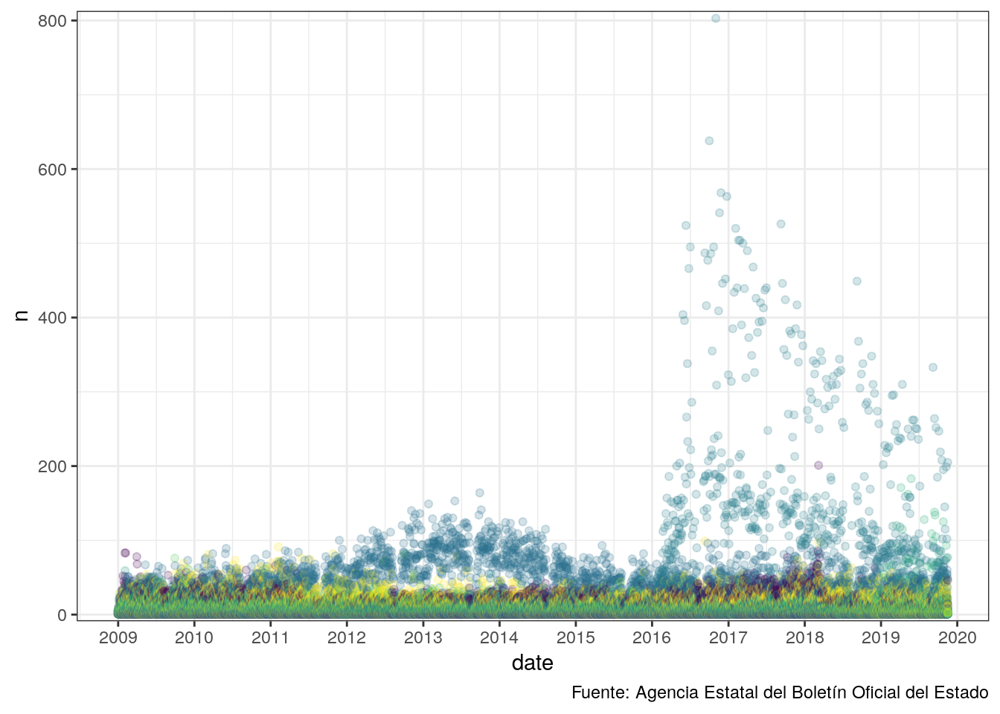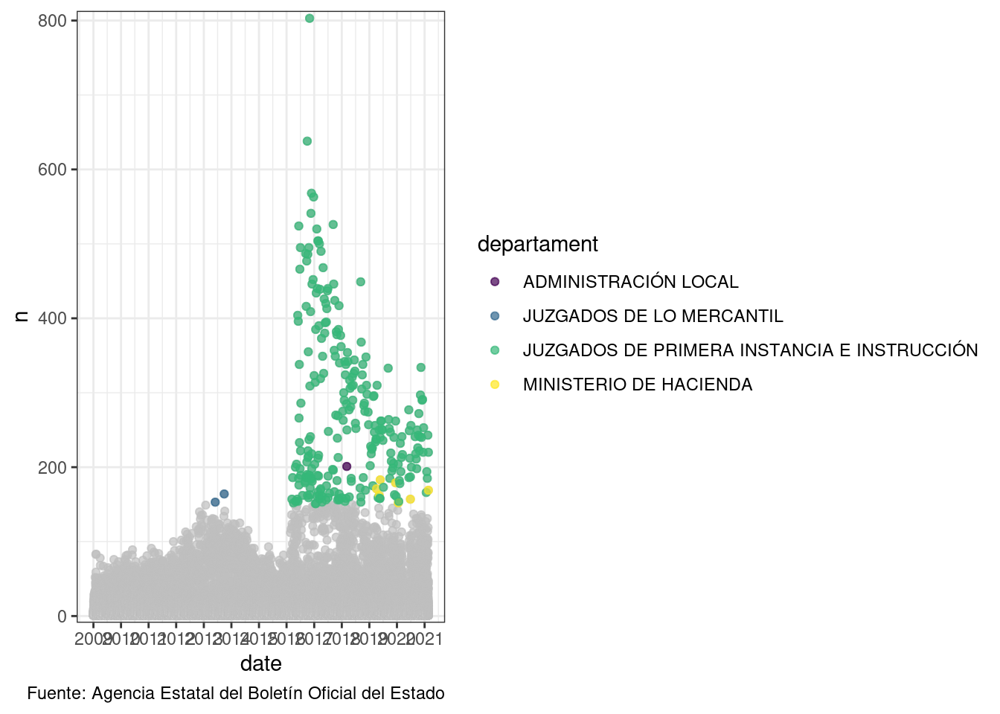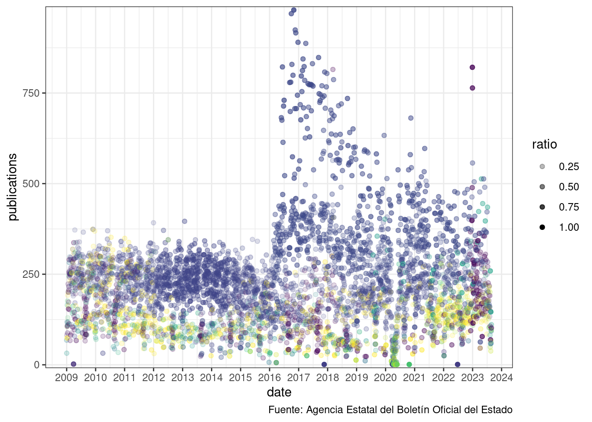
Aquí podemos ver que las universidades són el tercer departamento que más publicaciones ha generado (en el BOE) que científicas estamos en la primera línea mundial:

Epigrafe
Los epígrafes solo los tienen las disposiciones, pero no especifíca que nivel tienen las disposiciones.
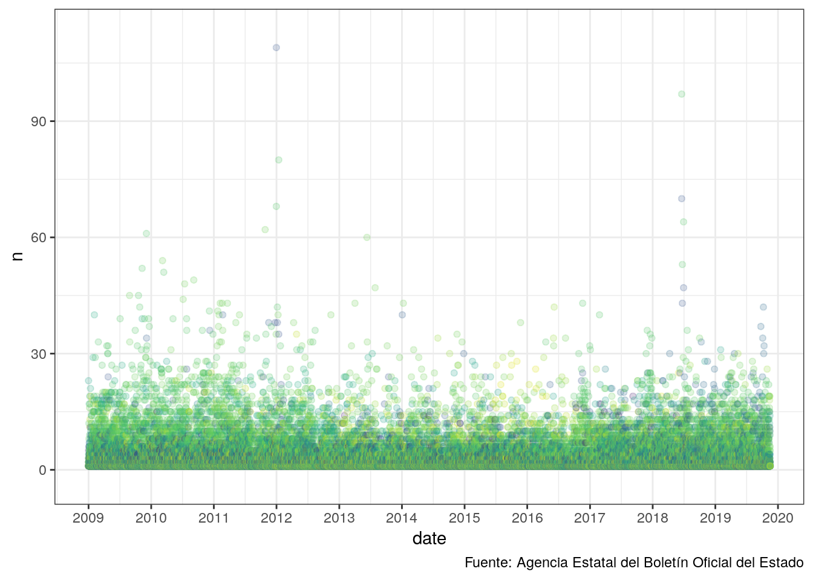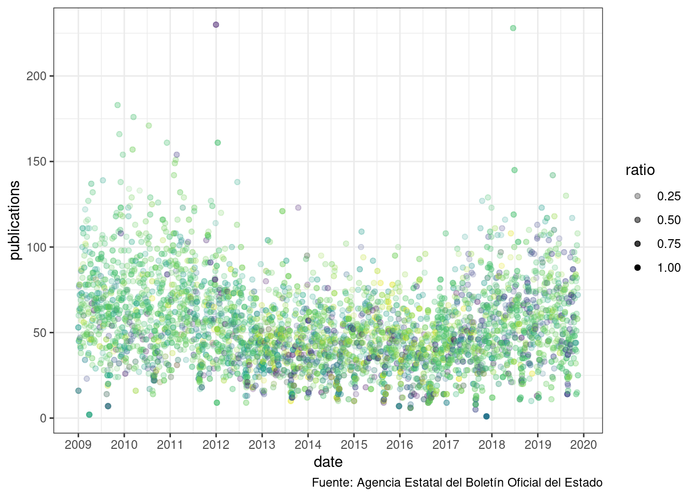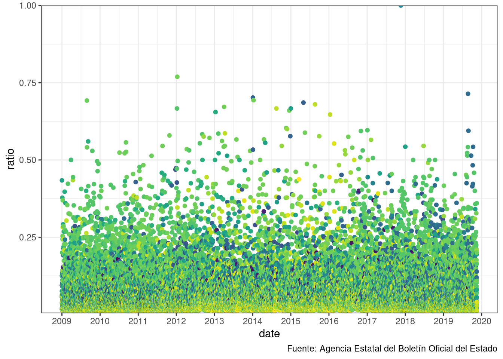
Texto
Podemos buscar algunas palabras del breve resumen:
## Marco Errores Orden Anuncio Resolucion
## 7231 12966 28885 196849 218416Parece que hay muchas publicaciones relacionadas con resoluciones y anuncio.
Número de páginas
Por último las páginas publicadas:
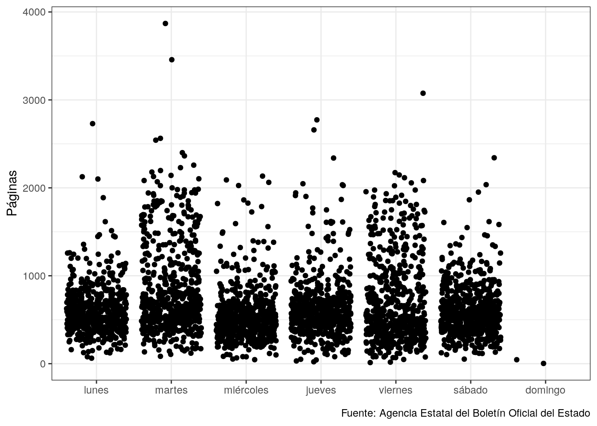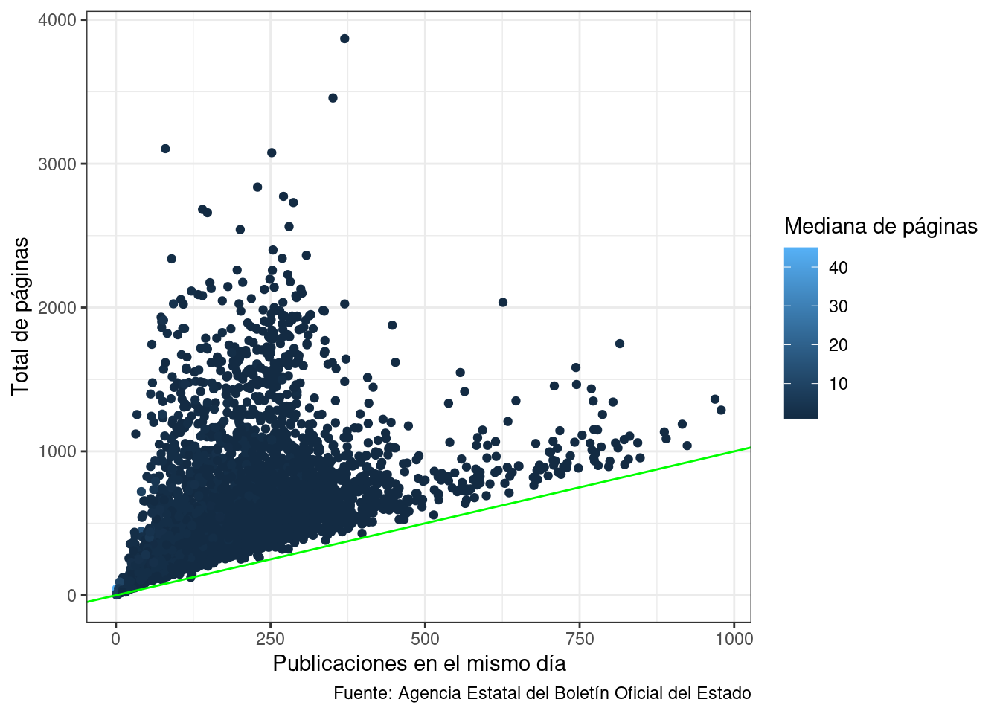
En el último gráfico la línia indica la relación 1 página por publicación.
Relación entre boletines y códigos publicaciones
Cada publicación tiene un código que va incrementandose según el tipo de publicación que sea.
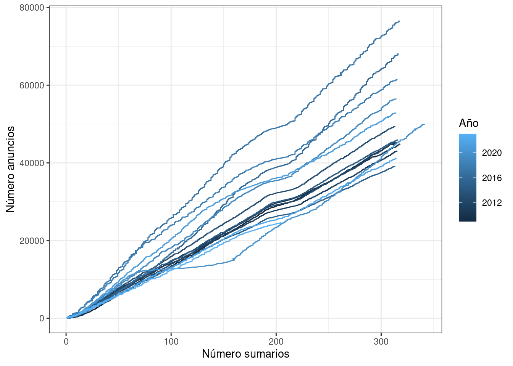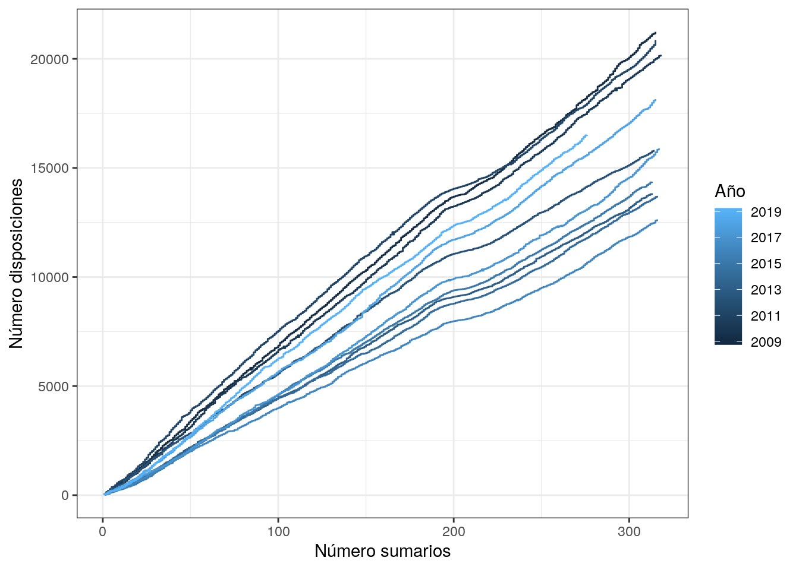
Conclusiones
Mirar las publicaciones del BOE es una fuente interesante de notícias.